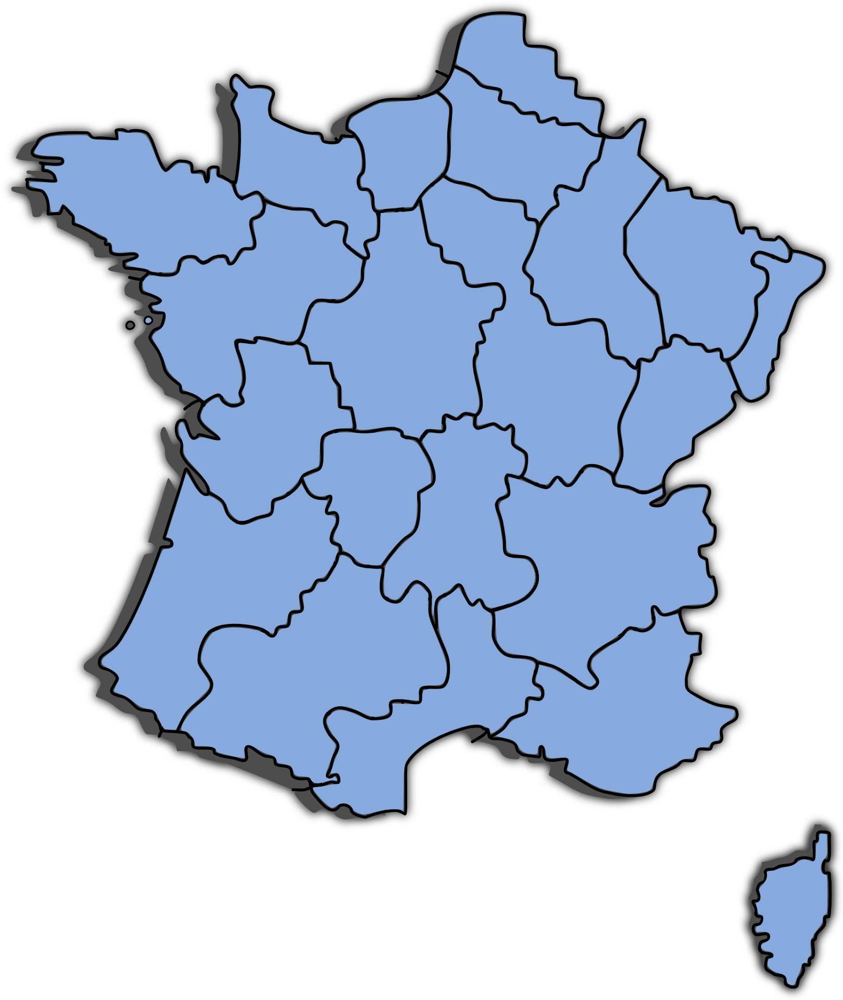
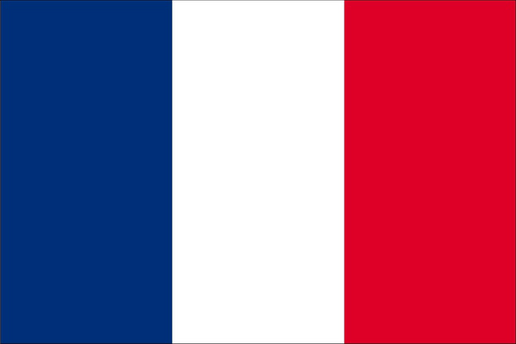

O Francii
Francie je stát, který se rozkládá na dvou kontinentech a to v Evropě a v Oceánii. Na Evropském kontinentu se nachází samotný stát Francie, která je zároveň i státem přímostkým. Za to v Oceánii se nachází Francouzská Polynésie, což je ostrovní zkupenství patřící pod francouzskou správu. Francie jako stát takový sousedí se Španělskem, Andorrou, Belgii, Lucemburskem, Německem, Monakem, Švýcarskem a Itálii. Francie je moderní suverení demokratická země s bohatou krajinou i kulturou.

Základní informace
Rozloha samotné Francie: 551 695km²
Rozloha Francouzské Polynésie: 4 167km²
Státní zřízení: poloprezidentská republika
Populace: 67 milionů obyvatel
Úřední jazyk: Francouština
Hlavní město: Paříž
Měna: Euro
Členem EU: 1.ledna 1958
Členem NATO: 4.dubna 1949 | zakládající člen

Francouzská vlajka
Francouzská vlajka, označovaná jako Trikolóra, je jedním z hlavních symbolů Francie. Má poměr stran 2:3 a skládá se ze tří svislých pruhů – modrého, bílého a červeného. Bílá barva symbolizuje tradiční královskou vlajku a byla spojována s čistotou a jednotou. Modrá a červená pocházejí z městské vlajky Paříže, přičemž modrá značí víru a povinnost, zatímco červená představuje odvahu a obětování.
Poprvé byla vlajka použita během Velké francouzské revoluce, kdy se stala znakem svobody, rovnosti a bratrství. Dodnes je součástí francouzské identity a objevuje se nejen při oficiálních příležitostech, ale i na kulturních a sportovních akcích.